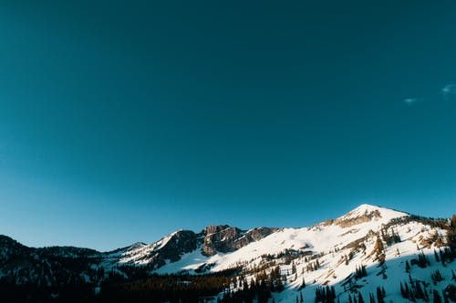
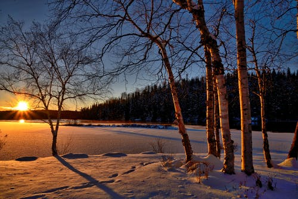
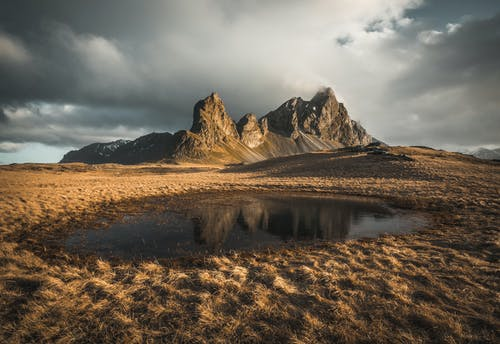

Temple Album
Home
About Us
Services
Products
Contact Us
Home

A Cold Mountain
A Forest Ice

An Ice Lake

A Lake Mountain
Lights on the Cieling
A Wonderful River
A Path to Walk
A Sun Forest
A Highway to Road